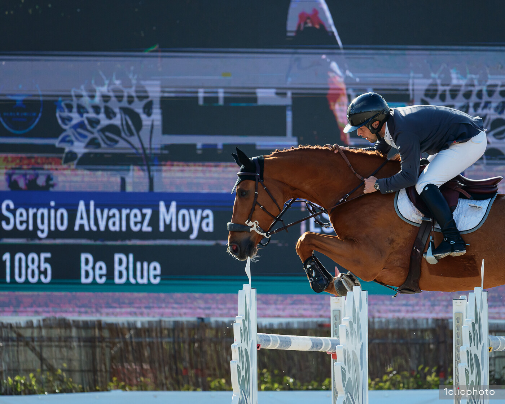
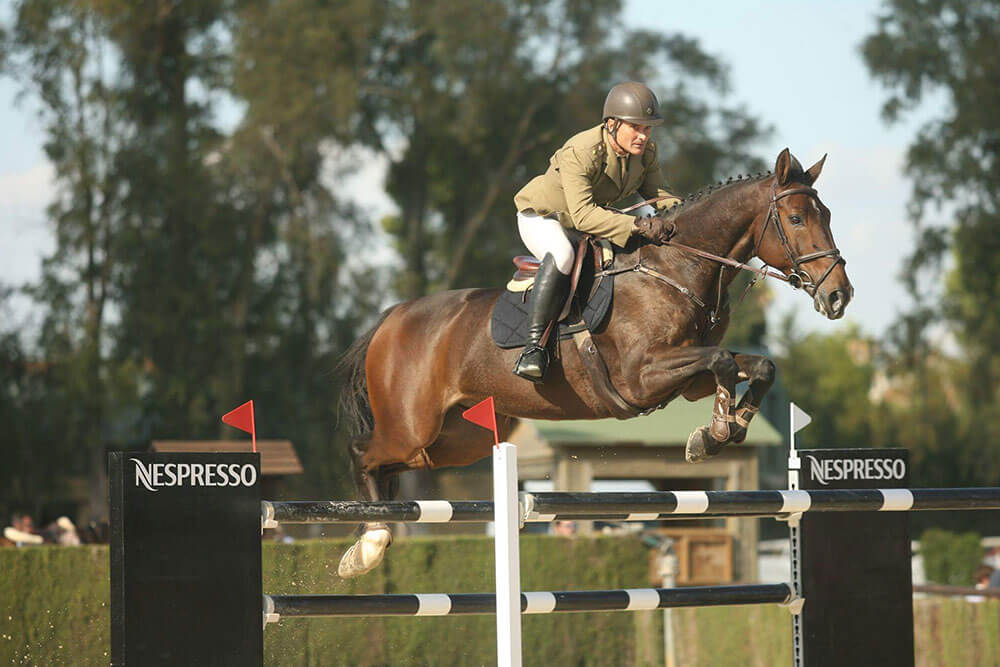

Salto
-

René Dittmer y Corsica X triunfan en la jornada inaugural del LGCT de Riesenbeck
El alemán René Dittmer se impuso en el CSI5* 1.45m de apertura del Longines Global Champions Tour en Riesenbeck con un crono imbatible de 59.87 segundos montando a Corsica X.
-

Mark Bluman se une al equipo israelí de salto con la vista puesta en el Mundial de Aachen
Mark Bluman, hasta ahora bajo bandera colombiana, se ha incorporado al equipo israelí de salto a finales de junio y confirma que su prioridad deportiva es el Mundial de Aachen (16-23 de agosto).
-

Suiza cierra su equipo de salto para el Mundial de Aachen con Steve Guerdat al frente
Suiza ha oficializado su equipo para el Mundial de Salto de Aachen (16-23 de agosto), con Steve Guerdat y Dynamix de Bélhème encabezando la nómina que dirige el chef d'équipe Peter van der Waaij.
-

Irlanda anuncia su equipo para el Mundial de Aachen con Allen, Kenny, O'Connor y Sweetnam
Horse Sport Ireland ha desvelado los cuatro binomios que defenderán los colores irlandeses en el Campeonato del Mundo de Salto que acogerá Aachen el próximo mes. La seleccionadora Jessica Kürten ha apostado por experiencia de máximo nivel con Bertram Allen, Darragh Kenny, Cian O'Connor y Shane Sweetnam.
-

La élite mundial del salto se cita en Riesenbeck con transmisión gratuita
Del 11 al 13 de septiembre, Riesenbeck International acogerá la novena etapa del Longines Global Champions Tour 2026, con cuatro de los cinco primeros del ranking presentes y retransmisión libre por primera vez en YouTube.
-

Gijón 2026 arranca el 25 de agosto con CSI2* y CSI4* y 546.400 € en premios
El Concurso Hípico Internacional de Gijón regresa a Las Mestas del 25 de agosto al 31, con jornada inaugural exclusiva de CSI2* y debut del nuevo jefe de pista Santiago Varela.
-

La FEI publica las FAQ sobre equipamiento en salto, vigentes desde febrero de 2027
La Federación Ecuestre Internacional ha actualizado el documento de preguntas frecuentes sobre los requisitos de equipamiento y arreos en la disciplina de salto de obstáculos, que entrará en vigor el próximo 1 de febrero de 2027.
-

España cierra el equipo titular de salto para el Mundial de Aachen
La Real Federación Hípica Española ha oficializado los cinco binomios que representarán a la selección nacional de salto en los Campeonatos del Mundo de Aachen, que se disputarán del 11 al 23 de agosto en la sede alemana.
-

Katharina Rhomberg conquista el Gran Premio del CSIO3* de Šamorín
La amazona austriaca Katharina Rhomberg firmó este domingo la victoria en el Gran Premio del CSIO3* de Šamorín, semifinal de la Longines EEF Nations Cup, tras un desempate impecable con Colestus Cambridge.
-

GCL 2026: cierra el mercado de fichajes con cambios estratégicos en varios equipos
La ventana de traspasos de mitad de temporada de la Global Champions League 2026 ha cerrado oficialmente, con movimientos clave que reconfiguran las alineaciones de cara a la recta final del campeonato y los GC Playoffs de Riad.
-

Suecia revela su short list de salto para el Mundial de Aachen con Fredricson y von Eckermann
La Federación Ecuestre Sueca ha hecho pública la lista corta de binomios que aspiran a formar el equipo nacional para el Mundial de Salto de Aachen, que se disputará del 11 al 23 de agosto.
-
Hípica al Día
La semana del salto: Riesenbeck acoge el LGCT y encabeza 17 CSI entre el lunes 13 y el domingo 19
El calendario internacional de salto entra esta semana en una de sus fechas más nutridas del verano europeo, con diecisiete CSI repartidos por Europa y Norteamérica y una cita mayor: el CSI5*-GCT de Riesenbeck, decimotercera parada del Longines Global Champions Tour 2026, que se disputa a partir del miércoles 15 en
-

Harry Charles logra el doblete nocturno en Valkenswaard con Bandit
El jinete británico firmó su segunda victoria consecutiva en las pruebas estrella del Longines Tops International Arena Summer Classic, imponiéndose en el CSI4* 1.50m con un crono de 61.88 segundos bajo las luces holandesas.
-
Hípica al Día
Shane Sweetnam y James Kann Cruz conquistan el Rolex Grand Prix de Falsterbo
El irlandés Shane Sweetnam se llevó este domingo el Rolex Grand Prix CSIO5* del Falsterbo Horse Show con James Kann Cruz, su primera victoria en un Gran Premio cinco estrellas, ante un estadio sueco lleno hasta la bandera.
-

Iván Serrano conquista el Trofeo CaixaBank del CSI4* de A Coruña con Rain-Man
El jinete español firmó un desempate rapidísimo en la prueba de 1,50 m de Casas Novas, por delante de Sergio Álvarez Moya y Angelica Augustsson. Solo siete binomios repitieron cero faltas en una fase decisiva que se decidió por décimas.
-

Federica Fernández conquista el Trofeo Checkpoint por dos centésimas en Casas Novas
La amazona se impuso en la segunda prueba del programa del CSI1* de A Coruña, que continuó este sábado en el recinto de Casas Novas con un desempate al límite ante Miguel Álvarez-Buylla.
-

Juana María Roig lidera el Trofeo Porsche del CSI de A Coruña
La amazona se situó al frente de la clasificación en la segunda jornada del concurso internacional de Casas Novas, que reúne este fin de semana a destacados binomios nacionales e internacionales en las instalaciones gallegas.
-

Farrington encabeza el ranking FEI de julio por tercer mes seguido con Vogel al acecho
Kent Farrington encara el mes de julio como número uno mundial por tercer mes consecutivo en el ranking Longines FEI de salto.
-

Riesenbeck International recupera el liderato de la GCL con triunfo perfecto en París
El equipo alemán firmó cuatro recorridos impecables bajo la Torre Eiffel para imponerse en la séptima etapa del campeonato, con Marco Kutscher y Maximilian Weishaupt protagonizando una actuación inmaculada ante el público parisino.
-

New York Empire conquista la Global Champions League de Cannes
La escuadra estadounidense sumó 6 puntos de penalización en las dos mangas disputadas este viernes en uno de los escenarios más emblemáticos del circuito. Tom Wachman y Scott Brash construyeron el triunfo con regularidad frente a Doha Falcons y Prague Lions.
-

Max Kühner conquista el Gran Premio del LGCT de París con EIC Up Too Jacco Blue
El jinete austriaco Max Kühner firmó la victoria en el Gran Premio del Longines Global Champions Tour de París con EIC Up Too Jacco Blue tras imponerse en un desempate a tres en la pista instalada al pie de la Torre Eiffel.
-

Piergiorgio Bucci conquista el Rolex Grand Prix de La Baule con Hantano
El jinete italiano logró su segundo triunfo consecutivo en el circuito Rolex Series, tras su victoria en Roma hace dos semanas. Martin Fuchs y Julien Épaillard completaron el podio en una prueba de máximo nivel.
-

Ciaran Nallon se impone con Megalon K en el CSI5* LGCT de Saint-Tropez
El jinete irlandés Ciaran Nallon firmó la victoria con Megalon K en la quinta prueba del CSI5* Longines Global Champions Tour de Ramatuelle Saint-Tropez. El binomio detuvo el cronómetro en 34,77 segundos con un doble cero, suficiente para superar por escasos centésimas a la alemana Katrin Eckermann.
-

Sergio Álvarez Moya gana la prueba inaugural del CSI5* LGCT de Saint-Tropez con No Nonsense TN
El jinete español Sergio Álvarez Moya estrenó este miércoles la etapa de Saint-Tropez del Longines Global Champions Tour con una victoria de prestigio en la prueba inaugural del CSI5*, disputada en la finca de Ramatuelle.
-

Piergiorgio Bucci se lleva el Rolex Grand Prix del CSIO5* de Piazza di Siena
El italiano Piergiorgio Bucci se adjudicó el Rolex Grand Prix del CSIO5* de Roma–Piazza di Siena con Pallieter VD N.Ranch, único binomio en mantener el cero en el desempate sobre una prueba que decidió el podio al cronómetro.
-

Richard Vogel gana el Rolex Grand Prix del TSCHIO Aachen con United Touch S
El jinete alemán Richard Vogel se ha proclamado vencedor del Rolex Grand Prix del TSCHIO Aachen 2026, prueba estelar del concurso CSI5* que se disputa este fin de semana en el Allianz-Park de Aachen y que forma parte del Rolex Grand Slam of Show Jumping.
-

United Touch S conquista el Rolex Grand Prix de Aachen con su hijo en la misma pista
El semental United Touch S se impuso en el Gran Premio del CHIO de Aachen en una jornada histórica: compartió recorrido con su hijo Untouched LB, marcando un hito sin precedentes en la catedral del salto ecuestre mundial.
-

Francia conquista la Copa de Naciones del CSIO5* de La Baule
El equipo francés dirigido por Edouard Couperie se impuso en la Coupe des Nations Barrière del CSIO5* de La Baule, una de las citas más esperadas del calendario europeo de Copas de Naciones.
-

México conquista la Copa de Naciones del CSIO5* de Roma 78 años después
El equipo mexicano se impuso en la Copa de Naciones del CSIO5* de Roma, firmando su primera victoria en la prueba oficial por equipos desde 1946. Una gesta histórica que devuelve al combinado azteca al primer plano del salto internacional.
-

Kristen Vanderveen conquista el CSI5* de Mónaco con desempate de infarto
La amazona estadounidense se impuso con Starbucks 27 en el 1.50m Jump-Off del Longines Global Champions Tour de Mónaco, firmando un vertiginoso recorrido de 33.78 segundos que ningún rival pudo superar.
-

Maximilian Weishaupt firma el triunfo en el Prix Nikki Beach del CSI5* de Monte Carlo
El jinete alemán Maximilian Weishaupt se llevó el Prix Nikki Beach Monte-Carlo, prueba disputada a 1,45 m dentro del CSI5* del Longines Global Champions Tour de Monaco.
-

Steve Guerdat gana el Prix Saur del CSIO5* de La Baule con Lancelotta
El jinete suizo Steve Guerdat se ha llevado este sábado el Prix Saur del Jumping International CSIO5* de La Baule, una de las grandes pruebas del programa del concurso francés y antesala de la Copa de Naciones de la tarde.
-

Barbara Schnieper gana la prueba Ranking del CSIO5* de La Baule con Toronto Raptor
La amazona suiza Barbara Schnieper se impuso este jueves en el Prix Boss Equestrian, segunda prueba Ranking del CSIO5* de La Baule, con un cronómetro impecable de 25,38 segundos a lomos de Toronto Raptor.
-

Katie Laurie gana el Gran Premio CSI5* de 1,60 m en Spruce Meadows
La neozelandesa se impuso en el Akita Drilling Grand Prix presented by Rolex con Django II tras firmar el único recorrido sin faltas en el desempate. El egipcio Sameh El Dahan cayó en la vuelta decisiva.
-

Marcus Ehning se impone en el Gran Premio del CSIO5* de St Gallen
El jinete alemán Marcus Ehning conquistó la victoria en el Gran Premio del CSIO5* de St Gallen, prueba estelar del concurso suizo que cierra la semana de competición.
-

Amy Millar y Christiano abren el CSI5* Spruce Meadows 'Continental' con victoria en el 1,45 m
La amazona canadiense Amy Millar se ha llevado la Mission: Possible 1,45 m del All Canada Ring en la jornada de apertura del CSI5* Spruce Meadows "Continental", presentado por Rolex, con un recorrido impecable montando a "Christiano" en 63,16 segundos.
-

Jack Whitaker gana la prueba Ranking del CSIO5* Roma Piazza di Siena
El jinete británico Jack Whitaker se adjudicó este viernes la cuarta prueba Ranking del CSIO5* de Roma Piazza di Siena con Izara des Dames, deteniendo el crono en 70,63 segundos en una clase puntuable para el Longines Ranking Group disputada en la pista histórica de Villa Borghese.
-

Denis Lynch gana la prueba Ranking del CSIO5* Roma Piazza di Siena
El jinete irlandés Denis Lynch se llevó la primera prueba Ranking del CSIO5* de Roma con Conterno-Blue PS, deteniendo el crono en 39,27 segundos en la prueba inaugural del histórico concurso de Piazza di Siena, abierto este jueves bajo los pinos de Villa Borghese.
-

Emilio Bicocchi gana la prueba Ranking de velocidad del CSIO5* Roma
El jinete italiano Emilio Bicocchi se impuso este jueves en la segunda prueba Ranking del CSIO5* de Roma Piazza di Siena con Hemerald d'Argonne, deteniendo el crono en 24,16 segundos y firmando una victoria local en la jornada inaugural del concurso oficial cinco estrellas.
-

Riccardo Pisani gana la prueba Ranking de 1,50 m del CSIO5* Roma
El jinete italiano Riccardo Pisani conquistó este jueves la tercera prueba Ranking del CSIO5* de Roma con Chacco's Lawito PS, deteniendo el crono en 63,57 segundos en una clase de 1,50 m que volvió a sonreír a los anfitriones en la pista histórica de Piazza di Siena.
-

Victor Bettendorf triunfa en el Eiffel Challenge del LGCT de París
El jinete luxemburgués y Encore Toi du Linon se impusieron en el CSI5* 1.55m con una vuelta impecable de 39.00 segundos ante la Torre Eiffel, superando a Henrik von Eckermann y Philipp Weishaupt.
-

La batalla por el LGCT llega a París con Abdel Said líder y podio en juego
Del 19 al 21 de junio, el Champ de Mars acogerá la séptima cita del Longines Global Champions Tour 2026, con casi un millón de euros en premios y una carrera por el título cada vez más ajustada.
-

Anastasia Nielsen sorprende en el CSI4* de Valkenswaard con victoria al desempate ante Pessoa y de Luca
La amazona monegasca Anastasia Nielsen firmó una de las victorias más redondas de su carrera este sábado en el CSI4* Summer Classic de Valkenswaard, al imponerse en la prueba contra reloj con desempate inmediato del sábado.
-

Emanuele Gaudiano conquista el Grupo Eulen Trophy del CSI4* de A Coruña con Álvaro González de Zárate en el podio
El jinete italiano Emanuele Gaudiano se ha adjudicado este sábado el Grupo Eulen Trophy, la prueba Ranking del sábado en el CSI4* Casas Novas Summer Edition de A Coruña.
-

Laura Renwick y Marseille conquistan el histórico Gran Premio CSI4* del Al Shira'aa Bolesworth
La amazona británica Laura Renwick, a lomos del gallardete de ocho años Marseille, se ha llevado este viernes el Gran Premio CSI4* del Al Shira'aa Bolesworth International tras un desempate al límite en 37,10 segundos.
-

Spencer Smith conquista el Gran Premio CSI4* de Traverse City con un desempate impecable
El jinete estadounidense se impuso junto al castrado Keeneland en la prueba dotada con 181.200 dólares, parando el cronómetro en 48,47 segundos. Los seis binomios clasificados al desempate firmaron recorridos dobles sin faltas.
-

Julien Epaillard gana la prueba Ranking del CSI4* Cabourg Classic
El jinete francés Julien Epaillard se hizo este viernes con la victoria en el Prix Demeures de Campagne, prueba Ranking del CSI4* Cabourg Classic, a lomos de Le Coultre de Muze.
-

Romain Duguet gana el Grand Prix des Haras del CSI4* Cabourg Classic
El jinete suizo Romain Duguet conquistó este jueves el Grand Prix des Haras del CSI4* de Cabourg Classic con Bel Canto de Boguin, deteniendo el crono en 67,01 segundos en la prueba Ranking de la jornada inaugural de la cita normanda.
-

Noruega se impone en la Copa de Naciones del CSIO3* EEF de Drammen tras 16 años
El equipo anfitrión conquistó la prueba por naciones en casa tras un desempate a cuatro bandas, con el veterano Geir Gulliksen, de 66 años, como protagonista con Island V G. Bélgica, Alemania y Países Bajos completaron el podio.
-

Italia conquista la Copa de Naciones Longines EEF del CSIO3* de Deauville
El equipo italiano de salto se impuso este viernes en la Copa de Naciones Longines EEF del CSIO3* de Deauville, primer triunfo del grupo azzurro en el circuito europeo en 2026 y primer podio de la temporada.
-

España gana la Copa de Naciones CSIO3* de Lisboa tras desempate con Sudáfrica
El equipo español se impuso en la Copa de Naciones del CSIO3* de Lisboa tras igualar con Sudáfrica en las dos rondas y desempatar por tiempo acumulado: 39,52 segundos frente a 43,10. Francia completó el podio con 8 puntos totales.
-

Olivier Robert conquista el Gran Premio del CSI3* Maeza en Sariego
El jinete francés Olivier Robert se impuso en el Gran Premio del CSI3* que clausuró este domingo el concurso organizado por la Yeguada Finca Maeza en Sariego (Asturias), poniendo el broche a una cita que reunió a destacados jinetes del panorama internacional.
-

Trevor Breen se impone a su hermano Shane en el Gran Premio CSI3* del Al Shira'aa Bolesworth
El irlandés Trevor Breen se adjudicó este domingo el Gran Premio CSI3* (1,55 m) del Al Shira
-

Kamal Bahamdan se impone en el Gran Premio del CSI3* de Saint-Tropez
El saudí Kamal Abdullah Bahamdan se llevó el Gran Premio del CSI3* de Saint-Tropez con Cascadello Boy RM tras un desempate al cronómetro en el que tres binomios firmaron el doble cero.
-

Luke Dee gana el Stal Hendrix Grand Prix CSI3* de Kessel con Sergio Álvarez Moya en el podio
Luke Dee se llevó el Stal Hendrix CSI3* Grand Prix del JPM International de Kessel con Gangster WW tras un desempate de máxima exigencia en el que el español Sergio Álvarez Moya firmó la segunda plaza con Be Blue.
-

Marcel Schneider conquista el Gran Premio del CSI3* de Thessaloniki
El alemán Marcel Schneider se adjudicó el Gran Premio del CSI3* de Thessaloniki con Chucky PS, en una prueba decidida al desempate sobre el 1,50 metros del Ippos Club.
-

David Will gana el Gold Tour del CSIO3* EEF de Samorin con DSP King George
El jinete alemán David Will se ha adjudicado este sábado el Gold Tour, la prueba principal del sábado en el CSIO3* que acoge en Samorin la semifinal de la Longines EEF Nations Cup.
-

Ricardo Gil Santos gana el Trofeo CaixaBank del CSI3* de Maeza por dos centésimas
El jinete portugués Ricardo Gil Santos se llevó el Trofeo CaixaBank del CSI3* de Maeza este sábado en Sariego con un desempate al límite del cronómetro. Gil Santos paró el crono en 43,26 segundos con Gatsby Diamond en una prueba de 1,45 metros diseñada por Javier Trenor Paz.
-

Kent Farrington gana la Welcome Stake de 1,45 m del CSI3* de Traverse City
El jinete estadounidense, actual número uno del ranking FEI Longines, se impuso en la prueba inaugural del Great Lakes Equestrian Festival I con Diakatisa, yegua Oldenburg de nueve años.
-
Hípica al Día
Gábor Szabó Jr. brilla en casa al ganar el Big Tour del CSIO3* EEF de Budapest
El jinete húngaro Gábor Szabó Jr. se impuso en el Big Tour presented by Regale del CSIO3* EEF de Budapest, una de las pruebas Ranking del programa de 1,45 metros, con un recorrido impecable a lomos de Genius Conference.
-

Richard Spooner conquista la prueba de velocidad de 1,45 m del CSI3* de Ocala
El jinete estadounidense se impuso con «Lyjanair» tras parar el cronómetro en 64,11 segundos, casi cuatro segundos por delante de su compatriota Chloe Reid. El binomio suma así su cuarta victoria internacional del año.
-

Mariano Martínez Bastida se impone en el Gran Premio del CSN5* Moura Tours Valencia
El jinete murciano cerró un fin de semana sobresaliente con el triunfo en la prueba estelar del concurso. Martínez Bastida y 'Rox van de Middelstede' lideraron un desempate en el que nueve binomios lograron clasificarse tras el recorrido inicial.
-

Ana García-Torres abre el CSN5* Moura Tours de Valencia con victoria en 1,45 m
La jinete madrileña se impuso con Elton Blue D'Argonne en la primera jornada del concurso, firmando el mejor tiempo entre los ocho binomios que lograron cero faltas en las dos fases.
-

Jad Dana conquista el Gran Premio CSI2* de Ocala con Leonidas
El jinete libanés Jad Dana se impuso en el Gran Premio CSI2* de 85.000 dólares del World Equestrian Center de Ocala, con el castrado holandés Leonidas, y firmó su segunda victoria consecutiva en el recinto estadounidense en apenas dos días.
-

Anthony Wellens gana el Gran Premio CSI2* de Bonheiden con Quelle Force Van Sappenleen
El jinete belga Anthony Wellens se ha llevado el Gran Premio CSI2* del concurso de Bonheiden, celebrado entre el 1 y el 4 de julio en el complejo flamenco.
-
Hípica al Día
Álvaro González de Zárate y Casa Diva PS conquistan el Gran Premio CSI2* de Heras
Álvaro González de Zárate Fernández se impuso este domingo en el Cantabria Infinita Trophy, gran premio CSI2* del concurso internacional V CSI2* Heras Cantabria Infinita disputado sobre 1,45 m.
-

Tracy Fenney conquista el Gran Premio CSI2* de 1,45 m de Ocala con MTM Pablo
La amazona estadounidense firmó un doblete con cero faltas en el World Equestrian Center, donde selló la victoria con un crono de 40,67 segundos en el desempate de la prueba dotada con 82.500 dólares.
-

Louis Le Grelle conquista el Gran Premio del CSI2* de Bonheiden
El belga Louis Le Grelle se adjudicó el Gran Premio del CSI2* de Bonheiden con New Life van het Hellehof tras un desempate al cronómetro decidido por décimas en el 1,45 metros.
-

Sergio Álvarez Moya conquista el Gran Premio del CSI2* Peelbergen con Be Blue
El jinete asturiano firmó un pleno de victorias en el concurso neerlandés al imponerse en las dos pruebas disputadas con la yegua Brantzau, demostrando además una regularidad excepcional sin derribos en las siete rondas que completó.
-

John Pérez Bohm gana la ATCO Cup 1,45 m del CSI2* Spruce Meadows con Lareusa S
El jinete colombiano John Pérez Bohm se ha impuesto este sábado en la ATCO Cup, prueba de 1,45 metros del programa CSI2* del Spruce Meadows National. Pérez Bohm firmó un crono de 38,60 segundos en cero a lomos de Lareusa S para colgarse el triunfo en una llegada muy ajustada.
-

Dylan Munro gana la prueba Coril Holdings Jumper del CSI2* Spruce Meadows con Nimrod ES
El jinete canadiense Dylan Munro firmó este jueves la victoria en la prueba Coril Holdings Jumper de 1,30 metros del CSI2* Spruce Meadows National, con un crono de 60,99 segundos sin penalización a lomos de Nimrod ES.
-

Kyle King gana la Welcome del CSI2* Odlum Brown BC Open con Ninja BF
El californiano Kyle King se impuso en la prueba Welcome del CSI2* Odlum Brown BC Open, disputada en el Thunderbird Show Park de Langley (Columbia Británica, Canadá). Fue el debut internacional del castrado alemán Ninja BF, de ocho años.
-

Maya Denis se impone en el Time First Round del CSI2* del World Equestrian Center de Ohio
La jinete mexicana firmó un recorrido impecable con Jantien De Muze, parando el cronómetro en 61,980 segundos y aventajando en más de un segundo a la luxemburguesa Charlotte Bettendorf en una prueba celebrada este viernes en Wilmington.
-

Álvaro González de Zárate copa el podio en el Gran Premio Solumak del CSN3* de Heras
El jinete vitoriano firmó un doblete en la prueba principal del concurso cántabro al imponerse con Isadora de Ste Hermelle y terminar segundo con Pop Up, ambos caballos de ocho años con recorridos impecables en el desempate.
-

Carlos Bosch arrasa en el CSN3* de Antequera con un doblete sobre Instant Love M Kar
El jinete catalán se impuso en las dos pruebas principales del Gran Premio del CSN3* Ciudad de Antequera, consolidando su dominio sobre los 1,40 metros en el Centro Hípico malagueño.
-

Uxue Arruza conquista el Gran Premio del CSIOJ de Hagen con Clarín de Llamosasa
La jinete vasca se impuso en el desempate con el hijo de Clarence C tras firmar doble cero en una prueba con cerca de cien binomios. Lennard Tillmann y Josep Schaap completaron el podio.
-

German Camargo gana el Wellington National Grand Prix con Ophelia
El jinete colombiano se impuso en el desempate con 41,985 segundos, por delante del venezolano Alejandro Karolyi, que firmó el segundo y tercer puesto con dos caballos distintos en una prueba disputada en Florida.
-

Christian Kukuk conquista el Campeonato de Alemania de Saltos con Akarad Tivoli Z
El jinete alemán se proclamó campeón nacional en Balve tras firmar cinco recorridos sin un solo derribo, incluyendo el desempate. Marco Kutscher y Maximilian Lill completaron el podio con Cool Fox y Casallco's George PS, respectivamente.
-

Juan Riva Gil sube al podio en el CSIO Young Riders de Zuidwolde
El jinete español Juan Riva Gil firmó un destacado tercer puesto en una de las primeras pruebas del CSIO-YJCh de Zuidwolde, que se disputa en Países Bajos hasta el domingo.
-

Estados Unidos logra el bronce en la Copa de Naciones de Hagen con un equipo inexperto
Un conjunto estadounidense mayormente novel en competiciones europeas firmó la tercera plaza en el CDIO de Hagen, con Jordan LaPlaca superando problemas veterinarios de última hora para liderar al equipo con un 70,478 % y Gold Play.
-
Hípica al Día
Gran Bretaña se impone en el desempate a tres de la Longines League of Nations de Rotterdam
El equipo británico se adjudicó la penúltima etapa clasificatoria de la Longines League of Nations disputada en el CHIO Rotterdam tras un desempate a tres bandas contra Estados Unidos y Suiza en el histórico Kralingse Bos.
-

Francia conquista la Copa de las Naciones de La Baule tras nueve años de sequía
El equipo francés se impuso en la Coupe des Nations Barrière en el Jumping International de La Baule, logrando su primera victoria en esta competición desde 2017. A dos meses del Mundial, el triunfo supone un impulso de confianza definitivo para Les Bleus.
-

España suma 14 Copas de Naciones de Lisboa con cuatro triunfos desde el año 2000
El equipo español conquistó por decimocuarta vez en su historia la Copa de Naciones del CSIO3* de Lisboa, disputada en el hipódromo de Campo Grande. Desde la temporada 2000, los jinetes españoles han subido cuatro veces al primer cajón en la capital portuguesa.
-

Tracy Fenney se impone en el Gran Premio de 50.000 $ de Ocala con MTM Apple
La amazona estadounidense dominó la jornada inaugural de la serie de verano del World Equestrian Center con una victoria en el desempate del Gran Premio de 1,45 m, parando el cronómetro en 35,401 segundos.
-

Anastasia Nielsen triunfa en el GP de Ramatuelle con solo 20 años
La monegasca de 20 años se impuso en el Gran Premio Longines Global Champions Tour de St Tropez ante Thibeau Spits en un desenlace exclusivo para menores de 25 años.
-

Mark Bluman conquista el Gran Premio de Canadá en su debut en Spruce Meadows
El jinete colombiano logró uno de los dos únicos dobles recorridos sin penalización para alzarse con la victoria en el prestigioso RBC Grand Prix of Canada, presented by Rolex, disputado el 13 de junio.
-

Kent Farrington copa el podio del Gran Premio HITS con tres caballos en el Top 5
El número uno mundial se impuso con Vixen en los 75.000 dólares del Gran Premio HITS disputado el sábado en Saugerties (Nueva York) y firmó además el tercer y cuarto puesto con Diakatisa y Nikki Angel, respectivamente.
-

Ángel Cerdido Gastesi copa el podio del Gran Premio de Valdemoro con dos ceros
El jinete militar dominó el Gran Premio Ayuntamiento de Valdemoro-Memorial Almansa del CSN3* al firmar un doblete con 'Badminton de Tus' y 'Rona de Sil', ambos con recorrido impecable en el desempate.
-

Marc Dilasser conquista el Prix Saur en Chantilly con un desempate al límite
El jinete francés se impuso en la prueba Ranking FEI de 1,50 m sobre hierba con Make My Day Z du Gevres, superando a la estadounidense Laura Kraut por apenas seis centésimas de segundo en un desempate vibrante.
-

Mark Bluman gana el Sun Life Derby en Spruce Meadows tras vibrante desempate
El jinete israelí se impuso en el emblemático derbi del torneó 'North American' tras un recorrido sin faltas en 37.96 segundos, superando al canadiense Kyle King en el desempate final.
-

Abdulrahman Alrajhi se impone en la Copa ATCO Queen Elizabeth II de Spruce Meadows
El jinete saudí logró la única actuación sin penalizaciones en las dos mangas del prestigioso Gran Premio dotado con un millón de dólares, disputado en el certamen 'North American' de Spruce Meadows.
-

España se cuelga el bronce en Kronenberg y sella su pase para la final de la Longines EEF Series
El equipo español de saltos ha cerrado este sábado en tercera posición la semifinal de la Longines EEF Series celebrada en el complejo neerlandés de Kronenberg, con 19 puntos, y con esa clasificación asegura su presencia en la final de la temporada que se disputará en Avenches (Suiza) el próximo septiembre.
-

Lucy Davis Kennedy conquista la ATCO Cup 1.50m en Spruce Meadows con un desempate fulgurante
La jinete estadounidense y Ben 431 dominaron el desempate del ATCO Cup 1.50m en el 'North American' de Spruce Meadows con un tiempo de 36.52 segundos, superando a trece binomios de ocho naciones.
-

Conor Swail se despide de Flower, su yegua «con corazón de oro»
El irlandés Conor Swail ha rendido homenaje a Flower, la yegua que le acompañó en el circuito de cinco estrellas y que acaba de fallecer a los 22 años tras su retirada. El jinete la adquirió junto a Vanessa Mannix en 2017 y la despide con emotivas palabras.
-

Lillie Keenan se impone en la Jayman BUILT Cup 1.55m de Spruce Meadows
La jinete estadounidense y Kick On lograron un desempate impecable en 40.84 segundos para alzarse con la victoria en la prueba clasificatoria para la ATCO Queen Elizabeth II Cup, dotada con 1.000.000 de dólares.
-

Daniel Coyle domina la AKITA Drilling Cup en el arranque de Spruce Meadows
El jinete irlandés y Calippo 57 firmaron el único recorrido bajo los 70 segundos en la jornada inaugural del concurso 'North American' de Calgary, celebrado con motivo del Día de Canadá.
-

Richard Vogel domina en Spruce Meadows con tres victorias en un día
El jinete alemán, número dos del mundo, firmó un triplete histórico en el 'Pan American' de Spruce Meadows, coronándose en el AON Grand Prix con Gangster Montdesir bajo la lluvia persistente.
-

Richard Vogel conquista la Friends of the Meadows Cup 1.50m en Spruce Meadows
El jinete alemán, segundo del ranking mundial y aspirante al Rolex Grand Slam, se impuso en el desempate de cinco binomios con Phenyo Van Het Keysersbos en su debut en los Torneos de Verano canadienses.
-

Daniel Coyle y Farrel vencen en la Copa Canadian Utilities de Spruce Meadows
El irlandés Daniel Coyle y Farrel protagonizaron un desempeño estelar en el salto de desempate de la Copa Canadian Utilities 1.55m, cerrando con 40.64 segundos y todos los obstáculos en su sitio durante el 'Pan American' de Spruce Meadows.
-

Mark Bluman domina la jornada inaugural del 'Pan American' de Spruce Meadows
El jinete colombiano se impuso con Phelina de Septon en el Mission: Possible 1.50m, primera prueba internacional del torneo presentado por Rolex en Calgary.
-

William Whitaker y Flamboyant III conquistan el Al Shira'aa Hickstead Derby
El jinete británico William Whitaker se ha impuesto en el Al Shira'aa Hickstead Derby con Flamboyant III tras un desempate brillante, cerrando una espera de diez años desde su primer Boomerang Trophy con Glenavadra Brilliant en 2016.
-

Mark Edwards gana el Speed Derby de Hickstead con un caballo que vio las vallas Derby hace dos días
Dillinger NE se impuso en el British Speed Derby del Al Shira'aa Hickstead Derby con más de cuatro segundos de ventaja pese a enfrentarse por primera vez a las temidas vallas Derby el jueves anterior.
-

Matt Sampson y Un Secreto Z conquistan el Derby Tankard en Hickstead
El jinete británico Matt Sampson firmó la victoria con Un Secreto Z en el ClipMyHorse.TV Derby Tankard, prueba estrella de la jornada inaugural del Al Shira'aa Hickstead Derby Meeting.
-
Hípica al Día
El Al Shira'aa Hickstead Derby Meeting arranca el 18 de junio con ganadores históricos en pista
El All England Jumping Course de Hickstead vuelve a abrir sus puertas del 18 al 21 de junio para disputar una nueva edición del Al Shira'aa Hickstead Derby Meeting, la cita británica que culmina con el icónico Derby de Hickstead sobre 1,40 metros y obstáculos legendarios como el Derby Bank y el Devil's Dyke.
-

Juan Pablo Gaspar Albanez se impone en la Copa ATB 1.50m en Spruce Meadows
El jinete mexicano firmó un doble recorrido sin faltas y un desempate en 42.17 segundos para coronarse en la prueba estelar del último día del torneo 'National' 2026 en Calgary.
-

Rowan Willis gana la Friends of the Meadows Cup en la jornada inaugural del 'National'
El jinete australiano se impuso en el CSI5* de apertura del torneo de Spruce Meadows junto a Cape Town, marcando el mejor tiempo sin penalizaciones en la prueba de velocidad a 1.45m.
-

Juan Manuel Gallego firma tres podios en el Coril Holdings Jumper de Spruce Meadows
El jinete español Juan Manuel Gallego ha firmado uno de los días más productivos de su gira norteamericana en el Spruce Meadows National, donde subió al cajón en las tres pruebas Coril Holdings Jumper 1,30 m disputadas este sábado en el icónico recinto canadiense.
-

Juan Manuel Gallego firma podio en Spruce Meadows con Indiana de San Isidro
El jinete español Juan Manuel Gallego subió este jueves al podio del CSI5*/CSI2* Spruce Meadows National, en Calgary, al firmar el tercer puesto de la prueba Coril Holdings Jumper de 1,30 metros con Indiana de San Isidro.
-

Daniel Bluman se impone con Hummer Z en el Upperville Jumper Classic de 200.000 dólares
El jinete israelí Daniel Bluman dominó el Upperville Jumper Classic CSI4*, dotado con 200.000 dólares y patrocinado por Lugano Diamonds y Ethel M Chocolates, durante la edición 2026 del Upperville Colt and Horse Show, en Virginia.
-

McKayla Langmeier firma su segundo triunfo consecutivo en el Devon Horse Show
La amazona estadounidense se impuso en el Main Line Challenge -Two Phase con Pepita Vd Rollebeek, tras haber conquistado la víspera el Welcome Stake en la misma cita.
-

Falsterbo estrena este domingo el primer Rolex Grand Prix de Escandinavia
El CSIO5* de Falsterbo cerrará su edición 2026 con una premiere que redefine el mapa del salto internacional: este domingo 12 de julio se disputará el primer Rolex Grand Prix presentado por Agria de la historia en suelo escandinavo.
-
Falsterbo reúne al top mundial: Farrington, Vogel, Maher y el tridente sueco encabezan el CSIO5*
El CSIO5* de Falsterbo Horse Show ha reunido para su edición 2026 una de las nóminas más potentes de la temporada europea.
-

Gran Bretaña deposita 15 binomios como nominados para el Mundial de Salto de Aachen
British Equestrian y British Showjumping han oficializado los 15 binomios que Gran Bretaña incluye en su lista de nominados para el Mundial de Salto FEI 2026, que se disputará en Aachen entre el 11 y el 23 de agosto.
-

La Global Champions League 2026 estrena formato con eliminatoria a diez equipos
El circuito arranca en Doha el 4 de marzo con 17 sedes y un nuevo sistema de dos rondas que deja fuera de la segunda a los siete equipos peor clasificados. Los playoffs finales se disputan en Riad en noviembre.
-

Alemania anuncia su equipo de salto para el Mundial de Aachen con Deusser, Hinners, Thieme y Vogel
La Federación Ecuestre Alemana confirmó su cuarteto para el Mundial de Salto que se disputará en casa, en Aachen, del 11 al 23 de agosto. El equipo estará formado por Daniel Deusser con Otello de Guldenboom, Sophie Hinners con Iron Dames Singclair, André Thieme con DSP Chakaria y Richard Vogel con United Touch S.
-

El Longines Global Champions Tour regresa a Mónaco con su 20ª edición histórica
Del 2 al 4 de julio, Port Hercule acoge la novena etapa del circuito 2026 con los mejores jinetes del mundo en la arena más pequeña y exigente de la temporada.
-

Íñigo López de la Osa Franco será el primer jinete monegasco en un Mundial de Salto
Con apenas 22 años, Íñigo López de la Osa Franco se ha asegurado un lugar en la historia del deporte ecuestre del Principado de Mónaco: será el primer jinete monegasco de la historia en disputar un Campeonato Mundial de Salto, que se celebrará en Aachen del 11 al 23 de agosto de 2026.
-

Estados Unidos anuncia su equipo de salto para el Mundial de Aachen
La federación estadounidense ha confirmado la nómina de cinco binomios que competirán en el Campeonato del Mundo FEI de salto de Aachen, que se disputa del 19 al 23 de agosto en Alemania.
-
Hípica al Día
Brasil anuncia su equipo para el Mundial de Salto Aachen 2026
La Confederación Brasileña de Hipismo ha hecho pública la convocatoria de su seleccionado para el FEI Jumping World Championship que se disputará en Aachen del 17 al 23 de agosto, dentro del bloque de los FEI World Championships 2026.
-
Hípica al Día
El IJRC propone reformar el formato olímpico de salto y rescatar el descarte para Los Ángeles 2028
El International Jumping Riders Club (IJRC) ha trasladado al FEI Sports Forum 2026 un paquete de propuestas que tocan dos asuntos sensibles del salto internacional: el formato olímpico de cara a Los Ángeles 2028 y la selección por jinete frente a la actual designación por binomio.
-

Eduardo Álvarez Aznar y Madrid In Motion, a por la séptima del Longines Global Champions Tour
El binomio español disputa esta semana el CSI5* de París, séptima etapa del circuito internacional, con el objetivo de sumar puntos para la clasificación del Longines Global Champions Tour y la Global Champions League.
-

La Baule afronta su Rolex Grand Prix del domingo con 11 del top 15 del ranking mundial
El CSIO5* Jumping International de La Baule cierra este domingo su 53ª edición con el Rolex Grand Prix Ville de La Baule, prueba dotada con 500.000 euros y que se disputa a partir de las 14:30 hora local.
-

Hans Günter Winkler y Halla: el binomio de los tres oros olímpicos del salto
Más de seis décadas después de que cruzara su última pista, Halla sigue siendo el único caballo de salto que ha colgado al cuello tres medallas de oro olímpicas.
-

La semana del salto: La Baule (CSIO5*) y St Tropez (GCT) marcan el calendario europeo
La semana del 8 al 14 de junio trae uno de los tramos más cargados del calendario europeo de salto, con dos cinco estrellas en suelo francés —el CSIO5\* de La Baule y la octava parada del Longines Global Champions Tour en St Tropez— como núcleo de una agenda que suma además dos CSIO (Sopot y
-

Spruce Meadows 'National' afronta el RBC Grand Prix de Canadá presentado por Rolex como gran cita del fin de semana
El recinto canadiense de Spruce Meadows, en Calgary, vuelve a colocarse en el foco del salto internacional con el torneo 'National', presentado por Rolex, que se disputa del 10 al 14 de junio en formato CSI5*/CSI2*.
-

La Baule reúne a la élite mundial del salto a dos meses del Mundial de Aachen
El CSIO5* La Baule, que se disputa del 11 al 14 de junio, reunirá a 11 de los 15 mejores jinetes del mundo en una cita clave antes de los Campeonatos del Mundo de Salto de Aachen, programados del 19 al 23 de agosto.
-

Simon Delestre evoluciona favorablemente tras su caída en el Global Champions Tour de Cannes
El jinete francés presenta luxación de clavícula y hematomas tras el accidente del viernes, lesiones que no revisten gravedad. Permanece bajo supervisión médica a la espera de nuevas pruebas.
-

Aachen abre la temporada con un TSCHIO excepcional en mayo y un Rolex Grand Prix el domingo
La organización del CHIO Aachen ha programado entre el viernes 22 y el domingo 24 de mayo un TSCHIO con formato propio centrado en el salto.
-

El Real Club de Polo y Tennium se alían para impulsar el CSIO5* Barcelona
La Fundación del RCPB y la plataforma global de eventos deportivos Tennium han firmado un acuerdo de colaboración para reforzar el crecimiento del CSIO Barcelona, la cita de salto internacional más importante que se celebra en España.
-
Estados Unidos designa a Farrington como líder para la Copa de Naciones CSIO5* de Falsterbo
La Federación Ecuestre de Estados Unidos (USEF) confirmó el equipo Icon Global que competirá en la Copa de Naciones CSIO5* Agria Falsterbo, en Suecia, el próximo viernes 10 de julio.
-
Hípica al Día
La semana del salto: Spruce Meadows CSI5*, Bolesworth CSI4* y Maeza CSI3* entre lunes y domingo
La semana del 29 de junio al 5 de julio reparte quince concursos internacionales de salto por Europa, América del Norte y América Latina, con el CSI5* de Spruce Meadows como gran cita y presencia española asegurada en el calendario gracias al CSI3* de Yeguada Maeza, en Llerena.
-
Spruce Meadows anuncia el torneo Pan American 2026 con concursos CSI5*
El emblemático recinto canadiense acogerá del 25 al 28 de junio el torneo Pan American, presentado por Rolex, con competiciones CSI5*, CSI2* y categorías nacionales.
-

CSIO5* de Rotterdam: 41 jinetes de 11 países
Rotterdam celebra un CSIO5* del 17 de junio al 21 de junio. Repasamos quién está inscrito, según la lista oficial de la FEI.
-

Mark Bluman firma un doblete en la RBC Capital Markets Cup del CSI5* de Spruce Meadows
El colombiano se impuso con Inside of My Heart y fue segundo con Phelina de Septon en la prueba de 1,50 m disputada en Calgary. La norteamericana Emily Esau Williams completó el podio con Cascarado.
-

Spruce Meadows abre el 'Continental' con cuatro días de salto y categorías hasta CSI5* en Calgary
Spruce Meadows ha levantado este miércoles el telón del 'Continental', segundo torneo de su temporada de verano y primer concurso CSI5* del centro canadiense en 2026.
-

CSIO5* de Roma: Alberto Marquez Galobardes y Armando Trapote defienden a España
Roma (Italia) celebra un CSIO5* del 27 de mayo al 31 de mayo. Repasamos quién está inscrito y la representación española, según la lista oficial de la FEI.
-

El CSI4* A Coruña de Casas Novas abre la solicitud de invitaciones
La organización del CSI4* A Coruña de Casas Novas ha puesto a disposición de los interesados el procedimiento para solicitar invitaciones al concurso.
-

Manuel Fernández Saro firma un tercer puesto en el Gran Premio del CSI4* de Opglabbeek
El jinete español Manuel Fernández Saro se subió al podio del Gran Premio del CSI4* belga de Opglabbeek tras firmar un meritorio tercer puesto en la prueba principal del concurso.
-

Carlos Bosch lidera la participación española en el Gran Premio del CSIO3* Peelbergen
El jinete español firmó la mejor actuación nacional en la prueba de máxima altura del concurso disputado en los Países Bajos, consolidando su presencia en el circuito internacional CSIO.
-

España cerrará el orden de salida en la Copa de Naciones del CSIO3* de Deauville
El sorteo oficial de la Copa de Naciones del CSIO3* de Deauville ha situado a España en la última posición de salida, tras once equipos, en una prueba que se disputa este viernes 5 de junio a partir de las 12:45 horas.
-

España convoca a siete jinetes para el CSIO3* de Deauville en junio
La Real Federación Hípica Española ha anunciado la lista de convocados para el CSIO3* de Deauville (Francia), que se disputará del 3 al 7 de junio de 2026, con cinco binomios en equipo y dos individuales.
-

El Real Club de Polo de Barcelona cancela el CSN5* de la Liga Nacional por motivos sanitarios
El Real Club de Polo de Barcelona ha confirmado la cancelación del CSN5* de la Liga Nacional de Salto que estaba previsto del 19 al 21 de junio en sus instalaciones.
-

La Liga Nacional de Saltos regresa este mes con el CSN5* de Valladolid
La competición pucelana acogerá del 29 al 31 de mayo el segundo concurso puntuable de la temporada, tras el aplazamiento de la cita madrileña por el brote de rinoneumonitis en el Real Club de Campo Villa de Madrid.
-

El Moura Tours Valencia estrena la prueba por equipos en su sexto CSN5* de la temporada
El recinto valenciano arranca este viernes un nuevo Concurso Nacional de cinco estrellas con 340 binomios inscritos y la novedad de la prueba por equipos, primera cita de una serie que culminará en diciembre.
-

La RFHE suspende definitivamente el CSN5* de Madrid aplazado por rinoneumonitis
La Real Federación Hípica Española y la organización del concurso han acordado cancelar la prueba de la Liga Nacional de Saltos que estaba pendiente desde abril, cuando se detectaron varios casos de la enfermedad respiratoria.
-

José Bono firma un segundo puesto en el Gran Premio del CSI2* de St. Tropez
El jinete español José Bono logró subir al segundo cajón del podio en el Gran Premio del CSI2* de St. Tropez, celebrado en la localidad francesa de la Costa Azul.
-

El CSIO Barcelona 2026 abre la venta de entradas
El Real Club de Polo de Barcelona ha puesto a disposición del público las entradas para la edición 2026 del CSIO Barcelona, una de las citas de mayor prestigio del calendario internacional de salto de obstáculos.
-

El CSI de Gijón renueva Las Mestas y estrena obstáculos inspirados en la Universidad Laboral
Gijón afronta la edición 2026 de su Concurso Hípico Internacional con un cambio profundo en las instalaciones de Las Mestas.
-

La FEI aprueba la Premier Jumping League como serie oficial para su temporada inaugural en 2027
La Federación Ecuestre Internacional ha dado luz verde a la Premier Jumping League (PJL) como serie oficial.
-
Hípica al Día
El CSI Maeza arranca este viernes con foco en la cría nacional y dos trofeos especiales
El concurso de salto de la Yeguada Maeza dará inicio a tres jornadas de competición con pruebas Ranking Longines FEI y un programa que volverá a destacar el trabajo de criadores nacionales.
-

Estrena 'FAULTLESS', docuserie sobre los mejores jinetes de salto del mundo
La serie de seis episodios, narrada por Walton Goggins y producida en colaboración con Rolex, sigue a 14 jinetes de élite mundial durante la temporada 2025, incluidos los eventos del Rolex Grand Slam.
-

Hickstead desvela curiosidades históricas del Derby Bank y su icónico recinto de salto
El emblemático complejo británico comparte detalles técnicos y anécdotas sobre uno de los obstáculos más desafiantes del calendario ecuestre mundial, desde su construcción hasta las fechas del Derby 2027.
-

Las Mestas estrena nueva pista de entrenamiento con destino al CSI de Gijón
Las obras de renovación de la pista de entrenamiento del Complejo Deportivo Municipal de Las Mestas ya están en marcha tras la adjudicación. La instalación, clave para el CSI de Gijón 2026, estará lista el 10 de agosto.
-

Alemania anuncia el equipo para la Copa de Naciones de doma de Hagen
El Comité Alemán de Doma ha fijado el quinteto que competirá en la Copa de Naciones CDIO del primer fin de semana de julio en Hagen, cita que junto a los Nacionales de Balve sirve de selectivo para el Mundial de Aachen de este verano.
-

España inscribe quince jinetes en la lista nominativa para los Juegos Mundiales de Aachen
La RFHE ha presentado ante la FEI la relación de jinetes con opciones de formar el equipo de salto que acudirá a los Juegos Ecuestres Mundiales el próximo mes. La lista definitiva, aún abierta, se cerrará el 27 de julio.
-
Hípica al Día
Suecia preselecciona a Henrik von Eckermann y otros seis jinetes para el Mundial de Aachen
La Federación Sueca de Hípica ha hecho oficial la preselección de su equipo de salto para el Campeonato del Mundo FEI Aachen 2026, que se disputará del 11 al 23 de agosto en la ciudad alemana.
-
Hípica al Día
Kent Farrington renuncia al Mundial de Aachen y deja a Estados Unidos sin su líder
El número uno del ranking Longines ha comunicado su retirada de la selección estadounidense para el Campeonato del Mundo de Salto, previsto para este verano en la pista alemana, alegando motivos de planificación deportiva a largo plazo.
-

El Mundial de Aachen 2026 se acerca con sede del 11 al 23 de agosto y siete disciplinas en juego
El gran objetivo internacional del verano hípico, el Mundial de Aachen 2026, se celebrará del 11 al 23 de agosto en la sede alemana del Reitstadion, según el calendario oficial publicado por la organización.
-

Fallece Bob Ellis, el diseñador de recorridos de los Juegos Olímpicos de Londres 2012
El mundo del salto despide a Bob Ellis, considerado uno de los diseñadores de recorridos más influyentes de su generación. El británico ha fallecido a los 79 años tras una breve enfermedad.
-

St. Gallen, prueba de fuego para España de cara al Mundial de Aachen
El equipo español de salto afronta este fin de semana en St. Gallen (Suiza) una cita decisiva en su camino hacia el Mundial de Aachen 2026. Los jinetes se juegan su selección en una competición que servirá como escaparate ante el cuerpo técnico.
-

Spruce Meadows arranca la temporada el 3 de junio con el National presentado por Rolex
El recinto canadiense de Calgary inaugura el próximo 3 de junio sus Summer Tournaments con el National, primero de los tres concursos veraniegos que conforman el icónico circuito al aire libre de Spruce Meadows.
-

La FEI endurece los requisitos de acceso al Mundial de Caballos Jóvenes
A partir de 2026, los ejemplares de 5, 6 y 7 años deberán acreditar tres recorridos sin penalización en alturas mínimas crecientes para competir en el campeonato organizado junto a la WBFSH.
-

Lisa y Emanuele Gaudiano ganan la Longines Pro Am Cup de Mónaco
El binomio padre-hija del equipo Cavalleria Toscana se impuso con dos recorridos sin faltas y un tiempo combinado de 60.08 segundos en la competición por equipos celebrada en el Puerto Hércules.
-

España arranca con nota en la semifinal de la Longines EEF Series en Kronenberg
El equipo español inició con buen pie su participación en el CSIO3* de Kronenberg, primera jornada de una de las semifinales de la Longines EEF Series 2026 que reúne a los cinco mejores conjuntos de la Región Oeste.
-

Juan Manuel Gallego firma un doblete español en Spruce Meadows con Primavera e Indiana
El jinete español Juan Manuel Gallego se colgó los dos primeros puestos de la Friends of the Meadows Jumper a 1,30 m disputada este viernes en el CSI2* del Spruce Meadows 'North American', en Calgary.
-

Más de 115 jinetes de 23 países, listos para el Spruce Meadows 'North American'
El torneo de cinco estrellas arranca este 1 de julio en Calgary con la presencia de estrellas mundiales como Richard Vogel, McLain Ward y Tiffany Foster. Santiago Varela diseñará los recorridos en el emblemático International Ring.
-
Hípica al Día
España busca en Kronenberg su pase a la final de la Longines EEF Series
El equipo nacional de salto afronta del 1 al 5 de julio una de las semifinales de la Longines EEF Series 2026 en el CSIO3* de Kronenberg (Países Bajos), con el objetivo de asegurar su plaza en la final del circuito.
-

Becky Moody desvela los desafíos logísticos del traslado de Jagerbomb a la Copa del Mundo
La amazona británica explica los pormenores del transporte aéreo de su caballo desde Europa hasta Fort Worth, Texas, donde se proclamó campeona de la Copa del Mundo FEI de doma clásica.
-

Richard Vogel lidera el elenco del 'Pan American' de Spruce Meadows
Más de 250 caballos superaron la inspección veterinaria de la FEI, dando paso a una semana de competición de máximo nivel en Calgary con el actual número 2 del mundo como gran protagonista.
-

Daniel Coyle logra un triplete histórico en el Spruce Meadows National
El jinete irlandés firmó tres victorias en una misma jornada en Calgary, incluyendo un doblete en la Recon Metal Cup 1.55m con Farrel y Urville Z, además de imponerse en la Mercer Cup con Nord Face VDL.
-

Mark Bluman logra un histórico doblete en la Copa RBC Capital Markets en Spruce Meadows
El jinete colombiano conquistó el primer y segundo puesto en la prueba 1.50m del torneo 'National' en Canadá, con Inside My Heart y Phelina de Septon, en su primera temporada en el prestigioso recinto.
-

Ricardo Jurado defenderá título en la Copa Comunidad de Madrid del 19 al 21 de junio
El jinete sevillano, ganador de la edición anterior, competirá con la yegua de seis años Louisa JR en el concurso que reparte 60.000 euros en premios en las instalaciones del RACE de Madrid.
-

España queda fuera de la segunda manga de la Copa de Naciones de Sopot
El equipo español no logró clasificarse para la segunda vuelta de la Copa de Naciones del CSIO4* de Sopot (Polonia), disputada a 1,55 m bajo baremo dos mangas, tras acumular 12 puntos en la primera ronda.
-

España convoca equipo para la semifinal de la Longines EEF Series en Kronenberg
La Real Federación Hípica Española ha confirmado la composición del equipo nacional que afrontará el CSIO3* de Kronenberg (Países Bajos), sede de la semifinal de la Longines EEF Series, que se disputará del 1 al 5 de julio en las instalaciones de Peelbergen.
-

Rotterdam acoge la tercera cita de la Longines League of Nations con Alemania como rival a batir
El CHIO Rotterdam abre sus puertas la próxima semana como escenario de la tercera eliminatoria de clasificación para la Final de Barcelona, con Alemania liderando la serie tras su triunfo en Ocala.
-
Simon Delestre, operado del hombro tras una grave caída en Cannes
El jinete francés pasó por quirófano el lunes para estabilizar el hombro izquierdo tras la caída sufrida en el Gran Premio de Cannes. Los médicos diagnosticaron disyunción de clavícula y ligamentos, además de hematomas craneales.
-

Hof Kasselmann y Schockemöhle celebran su quinta subasta híbrida el 12 de junio
La subasta, que se celebra durante el evento juvenil Future Champions, ofrecerá 16 caballos de doma y salto cuidadosamente seleccionados. Antiguos lotes como Imo Pectore y Bon Ami compiten ahora en el circuito internacional.
-

US Equestrian convoca a cinco jinetes para la Copa de Naciones de La Baule
La federación estadounidense ha anunciado la lista de representantes del Icon Global U.S. Jumping Team para la cita del CSIO5* francés, que se disputa entre el 11 y el 14 de junio.
-

Thibeau Spits mantiene el liderato del ranking Longines FEI U-25
El jinete belga encabeza por cuarta actualización consecutiva la clasificación sub-25 de la FEI. Antoine Ermann y Tom Wachman completan el podio. Juan Riva Gil lidera la representación española en el puesto 160.
-

Bolesworth estrena en 2026 una fórmula con dos fines de semana y debuta el Concours
El Al Shira'aa Bolesworth International regresa este verano con un nuevo formato que reparte la competición en dos fines de semana consecutivos, del 26 de junio al 5 de julio, en su finca de Cheshire. La cita repartirá 500.
-

Conor Swail encadena seis victorias en nueve días en el circuito canadiense
El jinete irlandés se impuso en el CSI2* Friend of Tbird Qualifier del Thunderbird Horse Park con Kazelli VDL, sumando su sexto triunfo internacional en menos de diez días en suelo canadiense.
-

La Copa CDE regresa en septiembre con pruebas de 1'20 y 1'30 metros en Valencia
La Final ANCADES acogerá del 10 al 13 de septiembre en Moura Tours Valencia la Copa CDE en sus categorías de 1'20 y 1'30 metros, una cita pensada para los binomios que compiten con Caballo de Deporte Español.